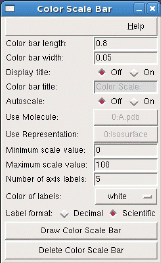
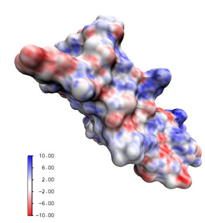

<!--#set var="TITLE" value="Color Scale Bar Plugin, Version 1.3"-->
<!--#include virtual="/Research/vmd/include/header-vmd.shtml"-->


The color scale bar plugin provides a very simple tool for
drawing a color scale bar within the VMD graphics window,
which can be useful when creating snapshot illustrations
and movies in a hurry, without the need for external 
illustration packages.



<!--#include virtual="/Research/vmd/include/footer-vmd.shtml"-->
